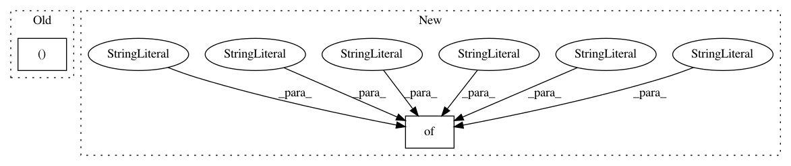

d42ab7284423433ab8b85c9e093bfe742b6cb2cc,examples/mujoco_all_sac_real_nvp.py,,,#,17
Before Change
"policy_s_t_layers": [1],
"policy_s_t_units": [128],
"preprocessing_hidden_sizes": (64, 8),
}
After Change
"preprocessing_hidden_sizes": [(128, 16)],
},
"ant": { // 8 DoF
"prefix": "ant",
"env_name": "Ant-v1",
"max_path_length": 1000,
"n_epochs": 10001,
"scale_reward": [10.0],
"preprocessing_hidden_sizes": [(128, 16)],
},
"humanoid": { // 21 DoF
"prefix": "humanoid",
"env_name": "humanoid-rllab",
In pattern: SUPERPATTERN
Frequency: 4
Non-data size: 2
Instances
Project Name: rail-berkeley/softlearning
Commit Name: d42ab7284423433ab8b85c9e093bfe742b6cb2cc
Time: 2018-05-22
Author: kristian.hartikainen@gmail.com
File Name: examples/mujoco_all_sac_real_nvp.py
Class Name:
Method Name:
Project Name: rail-berkeley/softlearning
Commit Name: 9634be247a33280cfc60b439e6cb61147bd79f56
Time: 2018-01-29
Author: haarnoja@berkeley.edu
File Name: softqlearning/misc/sampler.py
Class Name:
Method Name: rollout
Project Name: rail-berkeley/softlearning
Commit Name: a55f9be217b2320cec7c7dc44a8245496f851af5
Time: 2019-06-01
Author: hartikainen@berkeley.edu
File Name: softlearning/algorithms/sql.py
Class Name: SQL
Method Name: _init_placeholders
Project Name: rail-berkeley/softlearning
Commit Name: a55f9be217b2320cec7c7dc44a8245496f851af5
Time: 2019-06-01
Author: hartikainen@berkeley.edu
File Name: softlearning/algorithms/sac.py
Class Name: SAC
Method Name: _init_placeholders